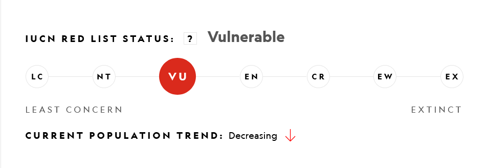

Giant Anteater
Did you know that there are 4 species of anteater? Click on the different types below to discover a fun fact!
The giant anteater is the largest species of anteater and can consume up to 30,000 ants in a single day!
The silky anteater, also known as the pygmy anteater, is the smallest species and is known for its soft, silky fur.
The southern tamandua is often found in trees, and its powerful forelimbs make it an excellent climber.
The northern tamandua is primarily nocturnal and uses its strong sense of smell to locate food in the dark.
Anteaters face significant threats to their survival, largely due to habitat loss, deforestation, and human-wildlife conflict. The Giant Anteater, for instance, is classified as vulnerable due to its declining population in parts of Central and South America. Similarly, the Silky Anteater and the Tamanduas are also at risk, primarily from habitat destruction and illegal hunting. Conservation efforts are crucial to protect these unique creatures and their habitats, as their decline not only affects the biodiversity of their ecosystems but also signifies broader environmental challenges. Preserving anteater populations is essential for maintaining ecological balance and ensuring the survival of these fascinating species for future generations.
